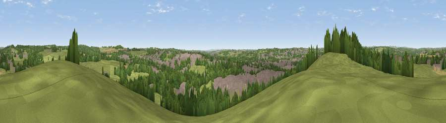

Viewpoint near Brinsley
#21883 in England · top 22% of its area beats it · near BrinsleyWhere it is
The exact computed spot (SK 46075 48125). Click the marker for map links.
The view, rendered

A 360° render of this exact spot computed from the terrain model, tree cover and land cover — summer colours, afternoon light, calibrated against photographs of famous viewpoints. Real trees, hedges and buildings will differ in detail.
The panorama
Grey silhouette: terrain skyline in each direction (720 bearings, Earth curvature and refraction included). Dashed green: skyline with trees (+15 m) and buildings (+8 m) as obstacles. Blue strip: how far the ground is visible on each bearing.
Where the view opens
Wedge length = distance to the farthest visible ground on that bearing (vegetation-aware). Rings at 10, 25 and 50 km.
What fills the view
48% grassland · 25% woodland · 22% built-up · 5% cropland ·
Angular shares of the visible panorama (visual magnitude), not map area. Landscape diversity 0.53 (0–1 Shannon).
Key numbers
More beautiful places nearby
The staircase of upgrades: each row has a higher view potential than everything closer. Driving times are estimates from straight-line distance, calibrated against real road routing — check an actual route before setting out.
| Place | Direction | Drive | Score |
|---|---|---|---|
| Viewpoint near Greasley | E · 3 km | ~7 min | 50.9 |
| Viewpoint near Greasley | E · 3 km | ~7 min | 56.2 |
| Viewpoint near Strelley | SSE · 8 km | ~16 min | 62.6 |
| Viewpoint near Little Eaton | SW · 11 km | ~20 min | 63.4 |
| No Man's Lane | S · 11 km | ~21 min | 65.8 |
| The Tors | WNW · 12 km | ~23 min | 68.9 |
| Crich Stand | WNW · 14 km | ~25 min | 73.0 |
| Alport Height | WNW · 16 km | ~28 min | 73.9 |
53.02844, -1.31446 · source: screening · position refined by local search. Computed location — check access rights before visiting.